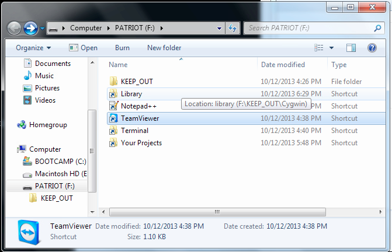
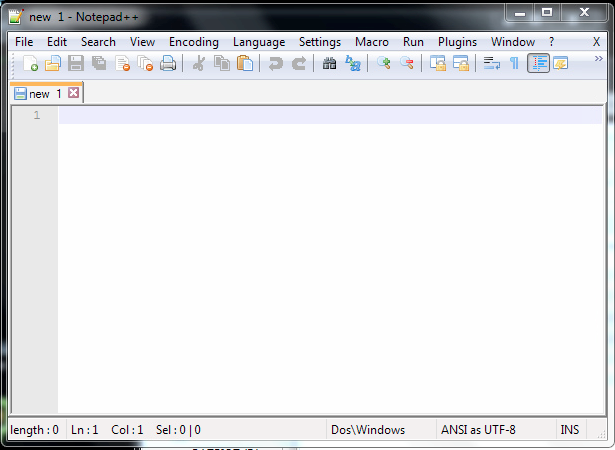

Welcome to your new development environment! This is going to be a little overwhelming at first.
As you've probably noticed, your environment looks something like this:
The whole thing is really just a folder full of shortcuts, but for the sake of clarity, we're going to call this your environment desktop from now on.
Let's examine the items on your environment desktop in more detail.
This one is somewhat self-explanatory, but you know what, I'm not the boss of you. If you want to play it safe, keep out. If you're feeling adventurous, you can install apps into this directory after downloading them from Portable Apps, and then add shortcuts to those apps onto your environment desktop.
Just know that some of the files in KEEP_OUT are delicate, and messing with them could break your environment.
You must be already a bit familiar with what the Library does, if you're reading this page! The Library contains a bunch of training materials for you to read, all accessible from one index.html page that you can drag into your browser..
What you may not have realized is that the Library is magic -- it has the capability to sync with my version, which means you can update it with fresh or corrected material after I add it on my end. We'll get into how to do that a bit later.
This is your code editor -- you'll use it to edit website files, Ruby programs, and anything else that needs editing. It supports multiple languages. Go ahead, double-click on it to pop open a new file.
It should look something like this:
Click on Language in the top menu to browse your options. HTML, Ruby, JavaScript, and more are included. Fancy.
But this is a blank file, which is no fun. Let's open a file that already exists. Click File > Open and browse to your environment desktop (you may have to navigate up a few directories). Click on Library and then index to open ... this exact file.
Whoa. We're in the Matrix.